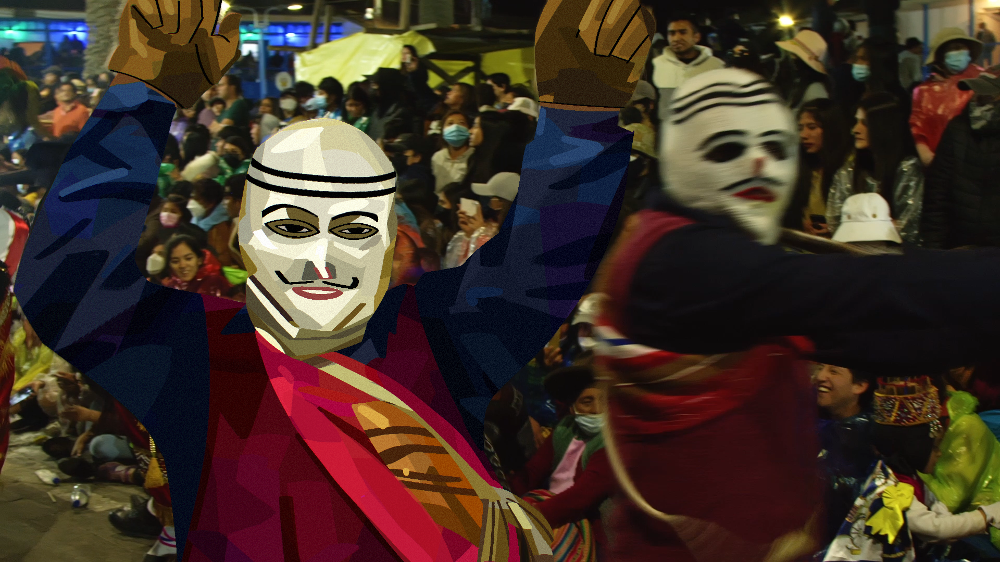

Este es un título atractivo e interesante
En un vibrante escenario de la fiesta de la Virgen del Carmen en Paucartambo, un grupo de Qhapaq Qollas realiza su enérgico baile tradicional.

Vestidos con trajes coloridos que destacan por sus patrones geométricos y adornos brillantes, los danzantes llevan máscaras blancas con expresiones únicas y sombreros altos decorados con plumas multicolores.
Sus movimientos son rítmicos, acompañados por la música de quenas y bombos que resuena en el aire. Al fondo, se aprecia la arquitectura colonial del pueblo y un cielo despejado, mientras los espectadores llenan las calles, inmersos en la alegría de esta ancestral celebración andina.